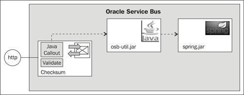
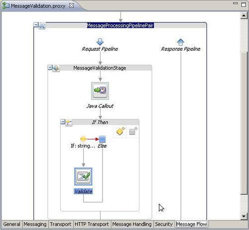
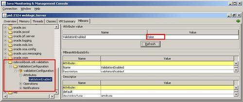

In the previous recipe, we have seen how to use a Validate action for performing message validation. The problem of using message validation is that it can involve quite some overhead and often it's no longer necessary after some period of testing. Instead of removing it from the code, it would be nice to keep it in the code, so that it can be enabled dynamically if needed. This recipe will show how this can be achieved with a Java Callout and an If Else action.

The Java Callout action will invoke a Java method which accesses a bean configured by the Spring framework application context. This bean holds the condition of whether the validation should be performed or not. Spring makes it easy to expose a bean through JMX, which we will use to dynamically enable/disable the message validation.
You can import the OSB project containing the solution of the previous recipe into Eclipse OEPE from \chapter-9\getting-ready\enabling-validate-dynamically. We will continue from there and add to the solution of the previous recipe.
We will start with the necessary Java logic supporting the enabling/disabling of the validation. The Java Class ValidationUtil will be invoked through the Java Callout action and holds a static method called shouldValidate().
public class ValidationUtil {
private static ApplicationContext ctx =
new ClassPathXmlApplicationContext
("classpath:applicationContext.xml");
public static boolean shouldValidate() {
ValidationConfiguration config = (ValidationConfiguration)
ctx.getBean("validationConfiguration");
return config.isValidationEnabled();
}
}
This method retrieves a Spring bean called validationConfiguration from the Spring application context. The ValidationConfiguration Java class holds a ValiationEnabled Boolean property. The value of the property is exposed to JMX through the @ManagedResource and @ManagedAttribute annotations.
@ManagedResource
public class ValidationConfiguration {
private boolean validationEnabled = true;
@ManagedAttribute
public boolean isValidationEnabled() {
return validationEnabled;
}
@ManagedAttribute
public void setValidationEnabled(boolean validationEnabled) {
this.validationEnabled = validationEnabled;
}
}
The Spring application context defines the validationConfiguration bean and makes sure that the bean annotated by @ManagedResource is exposed by JMX.
<?xml version="1.0" encoding="UTF-8"?> <beans xmlns="http://www.springframework.org/schema/beans" xmlns:xsi="http://www.w3.org/2001/XMLSchema-instance" xmlns:context="http://www.springframework.org/schema/context" xsi:schemaLocation="http://www.springframework.org/schema/beans http://www.springframework.org/schema/beans/spring-beans-2.5.xsd http://www.springframework.org/schema/context http://www.springframework.org/schema/context/ spring-context-2.5.xsd"> <context:mbean-export/> <bean id="validationConfiguration" class="osbcookbook.util.validation.ValidationConfiguration"> <property name="validationEnabled" value="true"/> </bean> </beans>
The complete Java project with this code is available in \chapter-9\solution\java\osb-validation-util. The JAR file of that project has already been created and resides inside the JAR folder of the imported OSB project.
Let's adapt the proxy service so that the Validate action is only executed, if the flag in the ValdationConfiguration is set to true. We will use a Java Callout action to invoke the ValdationUtil and process the return value by an If Then action. In Eclipse OEPE, perform the following steps:
osb-validation-util.jar file in the jar folder of the enabling-validate-dynamically project. Click OK. shouldValidate into the Result Value field. string($shouldValidate) = 'true' into the Expression field and click OK.
Now, let's test the validation of our proxy service. In the Service Bus console, perform the following steps:
proxy folder inside the enabling-validate-dynamically project.We can see that the validation is enabled by default. Now, let's disable the validation by changing the ValidationEnabled flag to false through a JMX, without having to redeploy the proxy service.
jconsole to start Java console. ValidationEnabled attribute of the ValidationConfiguration class. false into the Value column and click Refresh.
Now, let's retest the validation. In the Service Bus console, perform the following steps:
proxy folder inside the enabling-validate-dynamically project.In this recipe, we have added a condition around the Validate action, so that the message validation can be enabled/disabled at runtime. The condition is based on a Boolean flag, which we get through a Java Callout action. Because we have used Spring with its possibility to easily expose beans as JMX managed beans, we were able to change the value of the flag on the fly, using any program which supports JMX, such as the JConsole.